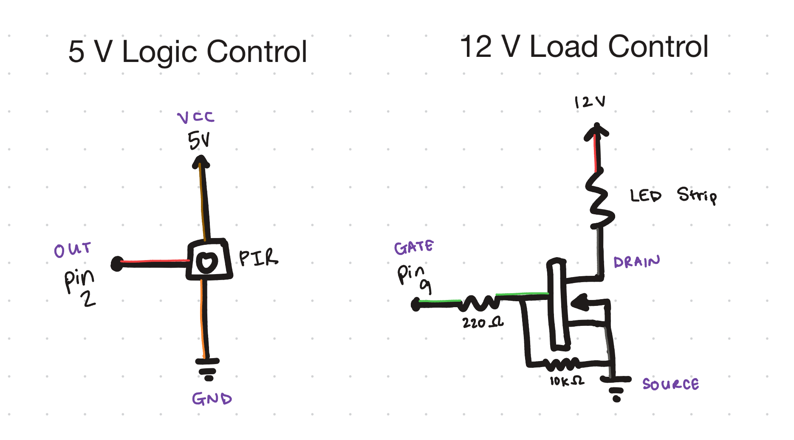
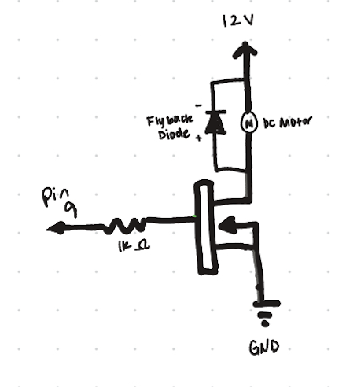
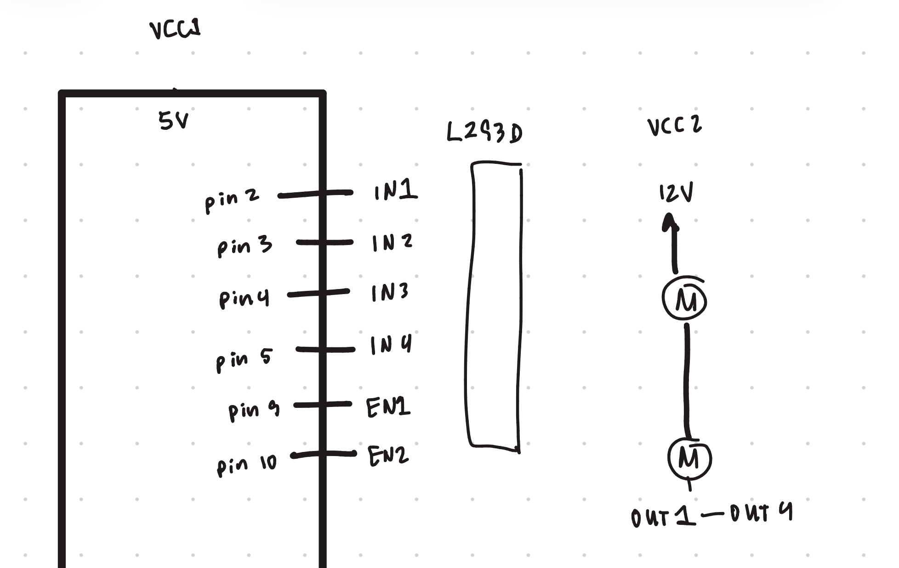

Schematic

As seen in the schematic, Arduino controls a 12V LED strip using an N-channel MOSFET (IRLZ44N) as a low-side switch. The Arduino operates at 5V logic, while the LED strip uses an external 12V supply.
Pin 9 drives the MOSFET gate through a 220Ω resistor to limit transient gate current (I = 5V / 220Ω ≈ 23mA, within Arduino limits). A 10kΩ pull-down resistor keeps the gate at 0V during startup to prevent accidental turn-on.
The LED strip draws approximately 1.2A at 12V (I = 14.4W / 12V). The IRLZ44N supports up to 47A, which is well above the required current. When the gate reaches 5V, the MOSFET turns on and the drain voltage drops near 0V.
Circuit

In the circuit, Arduino pin 9 connects to the MOSFET gate through 220Ω, with a 10kΩ pull-down to ground. The LED strip positive connects to 12V and the negative connects to the MOSFET drain. The MOSFET source, Arduino GND, PIR GND, and 12V supply GND share a common ground reference.
Code
// Include RobTillaart PIR library
#include
// Create PIR object
PIR pir;
// MOSFET gate control pin (PWM output)
int ledPin = 9;
void setup() {
// Start serial communication
Serial.begin(9600);
// Add PIR sensor on pin 2
pir.add(2);
// Set MOSFET gate pin as OUTPUT
// Default LOW (0V) keeps MOSFET OFF at startup
pinMode(ledPin, OUTPUT);
}
void loop() {
// Read PIR sensor at index 0
int motion = pir.read(0);
// If motion detected (HIGH)
if (motion == HIGH) {
// Print message
Serial.println("Motion Detected!");
// Turn MOSFET on with ~78% duty cycle
analogWrite(ledPin, 200);
} else {
// Print message
Serial.println("No Motion Detected!");
// Turn MOSFET off
analogWrite(ledPin, 0);
}
// Small delay for stability
delay(100);
}
Circuit Operation
Video Link: https://drive.google.com/file/d/1Sxykc3uiaph0olIUMO0bAF5Dk8xRAuNz/view?usp=sharing
The PIR sensor outputs ~5V to pin 2 when motion is detected. The Arduino responds using analogWrite() on pin 9. At a duty cycle of 200/255 (~78%), the MOSFET gate switches between 0V and 5V rapidly, turning the LED strip on most of the time and controlling brightness through PWM.
When motion is detected, approximately 1.2A flows from the 12V supply through the LED strip. When PWM is 0, the MOSFET remains off and current stops.
(Apologies for motion being hard to see in the first part of the video).
Questions
1: For your n-mosfet transistor (DMT6009LCT, IRLZ44N, or P30N06LE), what is the absolute maximum amount of current between pins 2 and 3?
For the IRLZ44N, the absolute maximum current between pins 2 (Drain) and 3 (Source) is 47A at a temperature of 25°C.
2: Draw a schematic for a circuit with using at least your arduino, a DC motor and a flyback diode. Find parts with datasheets you could use for each of these schematic components.

The schematic shows an Arduino Uno controlling a DC motor using an NPN transistor (such as the 2N2222A) configured as a low-side switch. The motor is powered by an external 12V supply. The Arduino PWM pin 9 connects to the transistor base through a current-limiting resistor (1 kΩ). The transistor collector connects to the negative terminal of the motor, while the positive motor terminal connects to the +12V supply.
A flyback diode (such as the 1N4007 rectifier diode) is placed across the motor terminals to protect the transistor from voltage spikes caused by the motor’s inductive back-EMF when switching off. The diode is oriented with its cathode connected to +12V and its anode connected to the transistor collector (motor negative terminal).
3: Draw a schematic using at least your arduino, this chip, and two motors for the L293D chip: https://www.ti.com/product/L293D. Write (pseudo) code that shows how you would move the motors both forward, both back, then one forward one back, and one back then forward.

The circuit uses the L293D dual H-bridge motor driver IC to independently control two DC motors with an Arduino Uno. The L293D logic supply (Vcc1, pin 16) is connected to 5V from the Arduino, while the motor supply (Vcc2, pin 8) is connected to an external motor power source (e.g., 9–12V). All ground pins (4, 5, 12, and 13) are connected to a common ground shared with the Arduino.
Motor A is connected to OUT1 and OUT2, and Motor B is connected to OUT3 and OUT4. The direction control pins (IN1, IN2 for Motor A and IN3, IN4 for Motor B) are connected to Arduino digital pins. The enable pins (EN1 and EN2) are connected to PWM-capable Arduino pins to allow speed control using analogWrite(). By setting the direction pins HIGH or LOW, each motor can rotate forward or backward.
// Motor A control pins
int motorA1 = 2;
int motorA2 = 3;
int motorAPWM = 9;
// Motor B control pins
int motorB1 = 4;
int motorB2 = 5;
int motorBPWM = 10;
void setup() {
pinMode(motorA1, OUTPUT);
pinMode(motorA2, OUTPUT);
pinMode(motorAPWM, OUTPUT);
pinMode(motorB1, OUTPUT);
pinMode(motorB2, OUTPUT);
pinMode(motorBPWM, OUTPUT);
}
void loop() {
// Both motors forward
digitalWrite(motorA1, HIGH);
digitalWrite(motorA2, LOW);
analogWrite(motorAPWM, 200);
digitalWrite(motorB1, HIGH);
digitalWrite(motorB2, LOW);
analogWrite(motorBPWM, 200);
delay(2000);
// Both motors backward
digitalWrite(motorA1, LOW);
digitalWrite(motorA2, HIGH);
analogWrite(motorAPWM, 200);
digitalWrite(motorB1, LOW);
digitalWrite(motorB2, HIGH);
analogWrite(motorBPWM, 200);
delay(2000);
// Motor A forward, Motor B backward
digitalWrite(motorA1, HIGH);
digitalWrite(motorA2, LOW);
digitalWrite(motorB1, LOW);
digitalWrite(motorB2, HIGH);
delay(2000);
// Motor A backward, Motor B forward
digitalWrite(motorA1, LOW);
digitalWrite(motorA2, HIGH);
digitalWrite(motorB1, HIGH);
digitalWrite(motorB2, LOW);
delay(2000);
}
4: Did you use AI tools in completing this assignment?
I used AI tools to help me understand how to connect the LED strip to the power supply.